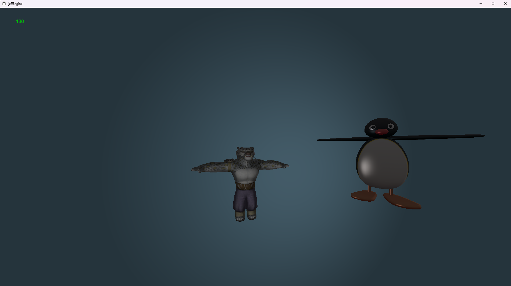
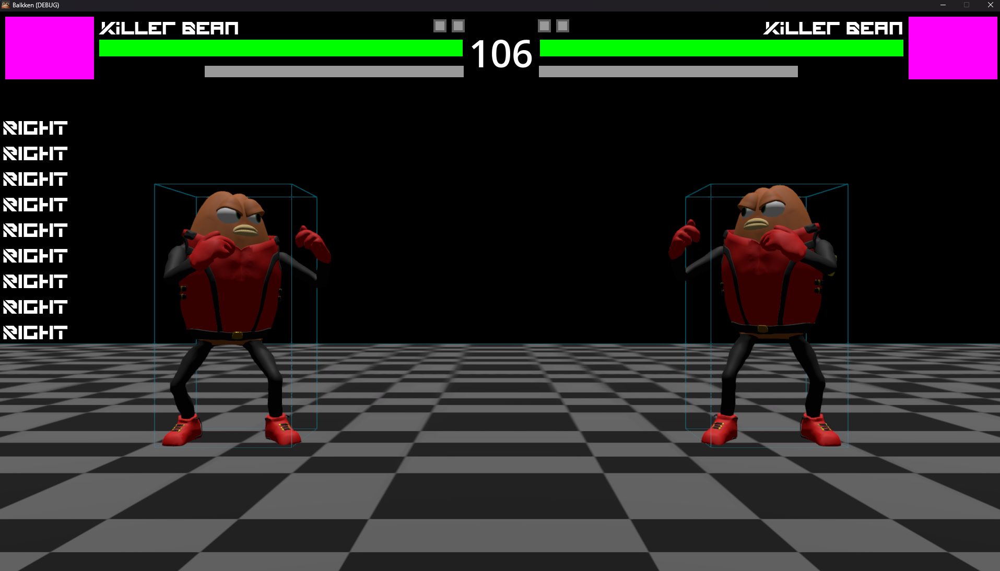
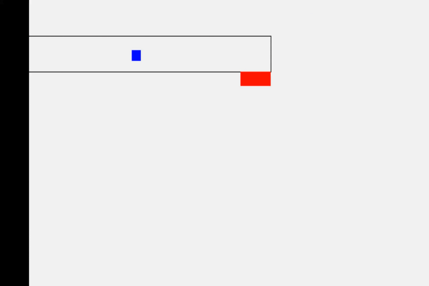
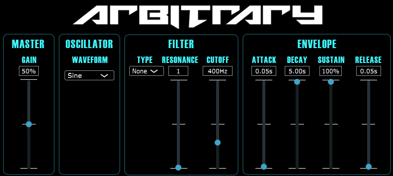
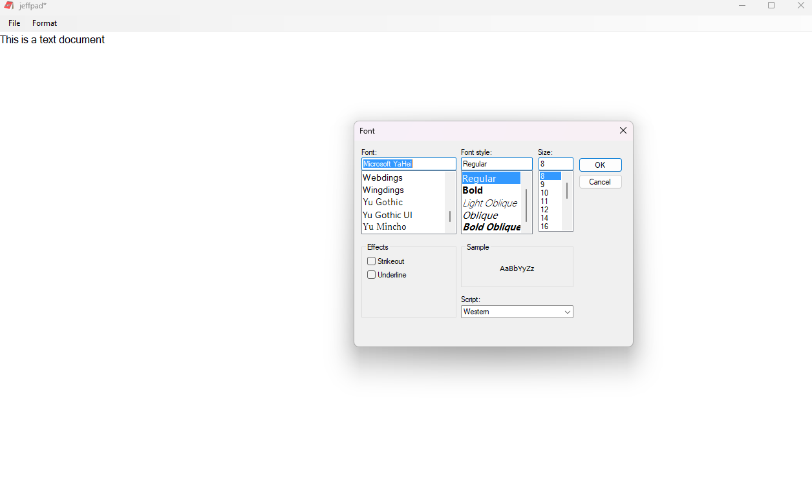

jomoetnt - jeffWebsite - About
jeffLang
Planned for my next big project after jeffOS. I made a sort of interpreted scripting mini-language in 2021, but this one will be compiled to machine code and have more features/paradigms. Maybe it will be incorporated into jeffEngine or jeffOS somehow.jeffOS
Planned for when I have some serious free time (probably never). It will be a UEFI application written in Rust for the RISC-V instruction set architecture.Biosphere Z
Planned for some time in the future once jeffEngine becomes more mature. A real-time strategy game about war between viruses, bacteria, and the immune system of jawed vertebrates (specifically humans, but generally still applies to others). The setting is not like a Petri dish in a literal sense, but is interpreted more metaphorically, with anthropomorphized immune cells, robotic viruses, and monstrous bacteria. Perhaps plants and/or fungi will eventually join in, but I found there to be a lot less resources on the interactions between these groups and bacteria/viruses (it is difficult enough to find detailed information on bacteria-virus interactions, even with the recent popular interest in bacteriophages).jeffVisualizer
Began and finished in 2024 for this webpage. Made in C# with no libraries. It uses the FFT algorithm and some further signal processing to decompose the frequency spectrum of a .wav file, and then visualizes it using bars (like the sorting demonstration).jeffEngine

A test scene rendered in jeffEngine. The green number in the top left is the current framerate. Note the Phong shading in the backdrop, and the specular highlights on Pingu from Phong illumination.
Currently in progress since 2024. A game engine providing both 2D and 3D graphics, audio, networking, and physics processing.
It uses the Win32 and Direct3D 11 APIs to leverage GPU hardware acceleration. The 3D graphics are the main focus, using Phong illumination and shading algorithms, but
physically-based rendering is planned. Programmed in C++20, with High Level Shading Language (HLSL) Model 5.0 as well where relevant. It originally started when I was just
curious to learn about 3D graphics programming and how it can be done in an efficient manner with GPU assistance (2021), but became a real project when the Godot game engine
became inadequate for my needs; I was programming a real-time strategy game, and with hundreds of units, the skeletal animation on the CPU became extremely taxing on the
performance of the game, which is impossible to bypass within the confines of Godot (aside from using tricks that I like to call "black magic"). There were several other
instances where the engine-provided tools had to be completely reprogrammed from scratch in order to work correctly, so I figured I might as well just make my own engine.
This way, I would be able to make games in a very tailored way instead of adapting a very general-purpose program to specific types of games.
ChatApp
Peer-to-peer networking demonstration written in C that makes use of UDP hole punching for network address translation (NAT) traversal. More of a proof of concept than anything. This started in 2020 but I only got it working in 2024.Balkken

Gameplay in Balkken will look something like this. The pink rectangles in the top corners are supposed to have an icon for the fighter. Inputs and hitboxes are only visible for debugging.
Currently on hiatus, started in 2024. A traditional fighting game with many non-original characters. Meant to be a bit silly, but still as fair and skill-expressive as any other game in its genre. Made in Godot with GDScript.
autoluka
Demonstration of the program's output with one speaker, converted to a looping GIF. At a rendering speed of 3200 frames per second, it would take only a few seconds to produce an hour-long video. The required inputs in this case would be one
audio file, one image for silence, and one image for talking (or any other noise that reaches the threshold).
Made for podcasting in 2024, it creates a video that visually indicates when certain people are talking (like on Discord, but with customizable images). It does require separate tracks for each speaker to be able to detect spikes in loudness,
however the audio analyzer (which also reads the input files) was programmed entirely from scratch in C without external libraries. The final assembler was written in Python and uses FFmpeg to encode the output video.
wikibook
An audiobook generated by the extension. The Wikipedia article named "Chemical element" was used as an example.
A chrome extension made in 2023 that turns Wikipedia articles into audiobooks with the click of a button. The extension itself was written in JavaScript, and it interfaces with a separate desktop app written in Python
in order to leverage GPU power for the AI text-to-speech.
Terraria League Mod
A mod (modification) to the video game Terraria, written with C# in 2023. This was a friend's project which I helped significantly on. The purpose was to add elements from another video game called League of Legends.ODE Solver
Written in Java in 2022, it uses Euler's method to numerically approximate ordinary differential equations of arbitrary order. I also made a 3D engine in Java at the same time that has a custom quaternion library.jefsort

The Java version of jefsort. In order, the algorithms are bubble sort, insertion sort, quicksort, and counting sort.
A visualized demonstration of various sorting algorithms written in 2022 using C#. I also made different versions in Java and C++, which included the following algorithms: bubble sort, jeff sort (custom algorithm),
insertion sort, quicksort, counting sort, and bogosort.
jeffbrain

Training in progress (~20 seconds played at 2.5x speed). Notice how over time, the AI learns to move to the right.
Began in 2020, restarted in 2022. A basic neural network written in C# that navigates a maze, trained using a genetic algorithm with backpropagation and gradient descent. The goal was to have it navigate any maze,
even if it had never seen it before, which a basic neural network would suffice for. It could also be trained on the CPU due to a low number of neurons.
Arbitrary

How the program appears in a digital audio workspace.
An example song snippet to demonstrate Arbitrary's capabilities.
Made in 2021 using C++, it makes use of the JUCE framework to create a functioning subtractive synthesizer, available as a VST2/VST3 plugin.
The waveforms that it can generate using its main oscillator are the typical analog ones along with a white noise generator. It has low-pass, band-pass, and high-pass filters with adjustable cutoff frequency and resonance.
It also has an amplitude envelope.
Clash of Clans War Stats

An example of how the latest version of the bot worked. The "1" argument to the command indicates that the first saved clan is desired, as there can be multiple clans being tracked per server.
A Discord bot made in 2021 with Java. Someone requested I make this for them so that they could decide who would be rewarded for their good performance in the game Clash of Clans, which has large groups aptly named clans.
It uses the Clash of Clans API to retrieve information about the last "war" the clan participated in, and ranks each team member's performance in several aspects. Over time, more features were added as requested.
jeffpad

This is almost exactly how Notepad on older versions of Windows looked like, and it had the same features.
Made in 2020 using C#, it is an exact replica (written from scratch) of the built-in Notepad application present in Windows, except the front of the notepad in the icon is red and the text "Jeff" is in front of it. This
also sparked a short-lived jeffdocs project which was supposed to be a Microsoft Word alternative, which was abandoned once I realized I needed to make a custom text renderer that interprets the .docx XML format.